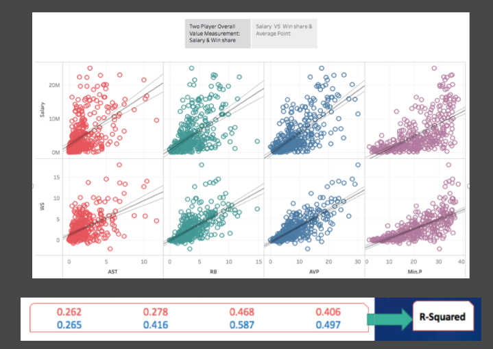

Of Course "Win Share" is More Accurate
Date: 03-26-2017
Source: Bullshit I produce; (view article)
Summary
I did project for one of my classes last quarter talking about a basketball statistics called "win share" which can tell a player's contribution to team success. Because people focus too much on offensive basketball stats, such as how many points a player can get, but ignoring lots of defensive players' contribution to team success due to the fact that defenses are hard to be recorded in numbers explicitly, I decided to use the concept of "win share" to measure NBA players more fairly. But how do you prove "win share" measurement is good? Then, I collected every player's salary as the 2nd measurement of their value, and compared the two. Surprisingly, I found a correlation between the two. That being said, if the salary, more or less, determines a player's value, "win share" does too. That is how I proved "win share" is the good measurement. Furthermore, I made the conclusion that "win share is more accurate than salary to measure a player’s overall game performance due to the higher R-Square value (denser) when comparing to some of the major stats".
Argument
The key is how is "Win Share" calculated. In short, it is calculated by using both offensive statistics and defensive statistics with complex math. (You can see the full explaination here). In other words, somebody calculated a number to represent a NBA player's contribution to team wins by using other game statistics. If that is the case, of couse win share has stronger correlation to other major stats than salary does because they come from those stats. This is where bullshit should be called. I used confirmation bias.
Conclusion
This is bullshit because the statement does not explictly say "win share" comes from those major basketball statistics, so it should belong to "tell partial story". The intention should be positive because I wanted to raise the audience's attention to defensive player' s contribution too. The statement is to public. The magnitude is 2.